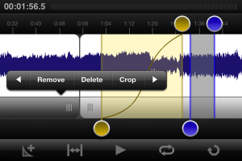

In what has been a long time coming, Audiofile Engineering, has finally updated it’s superior 2-track audio recording iPhone app, FiRe Field Recorder.
While there is certainly a lot more competition around since the first version launched just over 2 years ago, there are some tidy updates in this new version.
The All New FiRe 2 – Field Recorder
Our industry leading professional field recorder for iOS just got completely redesigned and rebuilt from the ground up. Although widely recognized by audio professionals as “best in class” we decided to skip the tweaks and create a next generation product incorporating many of the features our users have requested since FiRe’s initial release.
FiRe 2 will again revolutionize what you expect from a portable recording application. FiRe was the first iPhone recorder to display an accurate audio waveform in real time, the first to support markers, Broadcast WAVE metadata, and the instant downloading of files in multiple file formats. FiRe was the first application on any platform to offer native SoundCloud integration. Now FiRe 2 incorporates into its original elegant design a stunning list of powerful new features including:
– Advanced editing suite with SmartEdits, Bezier fades, change gain, normalize, looping playback, regions and more
– Improved Transport screen with faster and smoother drawing and larger waveform view
– EQ and Dynamics effects by Audiofile Engineering
– iTunes file transfer
– Enhanced input processing powered by iZotope™
– Record in background
– DropBox integration
– RegionsFiRe 2 was created for audio professionals by audio professionals. It’s powerful enough for the most experienced musicians and recording engineers, and its efficient workflow and intuitive interface makes it a breeze for business and casual use.
FiRe is built exclusively for iPhone and iPod touch and is brought to you by the minds at Audiofile Engineering. Combining powerful, elegant and uncluttered audio utilities with unparalleled technical support, Audiofile Engineering is one of the most innovative and experienced audio software developers for OS X and the iOS.
Other features include:
– Record in mono and stereo, 16-bit, 48 kHz
– Live waveform view including rectified view
– Live overview for easy navigation
– Scroll waveform with touch
– Navigate waveform via double-tap with configurable behavior
– Moveable Playback Head
– Tap Playback Head handle to add markers
– Editable Markers and Regions
– Preference to add markers at time intervals
– Overdub mode with playthrough
– Beautiful and accurate VU Input Meters
– VU meters change to output in playback
– Configurable time units display
– Tag Recordings, Markers and Regions with location data
– Pause gracefully when interrupted by phone call
– Countdown with gorgeous graphics
– Record for/until/over threshold… settings
– Preference to automatically move to end and/or add marker when recording starts
– Preference to limit recordings to 2GB
– Screen rotates 180 degrees for better control of the iPhone’s internal mic
– Broadcast WAVE metadata
– Searchable recordings list
– Sorting options for the Recordings List
– Ability to lock recordings
– File export via iTunes File Sharing, FTP and browser access
– SoundCloud (http://soundcloud.com) and DropBox (http://dropbox.com) integration
– Choice of export file formats: WAVE, AIFF, CAF, AAC, Apple Lossless, AAC, Podcast, Ogg Vorbis, FLACHardware Requirements:
iPhone 3GS & iPhone 4
3rd & 4th generation iPod touch
More info at – http://www.audiofile-engineering.com/fire/


{kind=link}
{kind=link}
{kind=link}